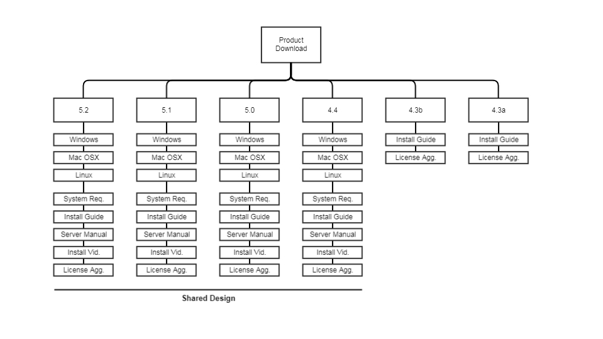
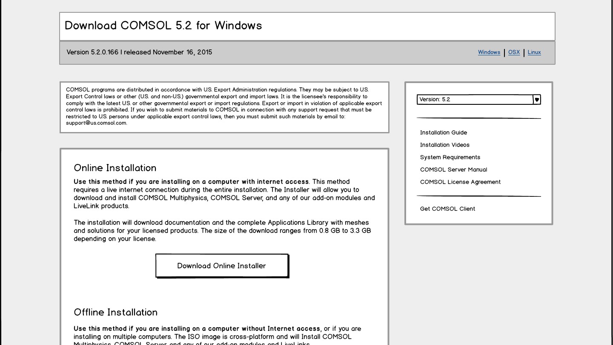

Fixing a UX Problem with an Itty-Bitty Redesign
At the end of 2015, we saw a significant uptick in tickets coming in describing a UX problem our users were having with the software download and update pages. COMSOL software has a few different products - the main desktop software, Comsol server, and a small application called COMSOL Client. COMSOL Client is basically a read-only viewer for simulations made in the main software. The problem that kept cropping up as that users were confused by the download interface, and kept downloading COMSOL Client when they thought they were downloading the main software platform.
This was, as you can imagine, a small but significant problem.
Previously, we had tried a simple update to the page copy to alleviate the problem, but it persisted, so a more comprehensive approach was needed. At the time of this redesign, there were six versions of the software available to download. The four most recent were in the current, problematic design (wherein the button to download Comsol client and the main software were on the same page), while the two older versions were in a legacy design that we could not update do to back-end architecture limitations.
Role
- Information Architecture
- Wireframing
- UI/UX Design
- HTML/CSS
The Process

I started with an audit of the current content and page structure. For each number version of the software, there is a version for Windows, macOS, and Linux which we would need to be able to toggle between, not only for the download button, but installation instructions as well. There are also links to system requirements, manuals, the license agreement, and an install video to be accounted for. In addition, there is an online and offline installation option.

In the end, the solution I landed on was - first and foremost - to give COMSOL Client it's own download page, accessible from a sidebar on the main software download pages. This sidebar also houses a drop-down to toggle between numbered versions and the secondary links such as the system requirements and installation video.
Because most traffic to this page would be to the particular number version, the OS toggle is placed prominently in the header, to avoid users downloading the wrong version for their operating system.
Reports of mistaken client downloads stopped immediately when the new version went out, and the design has been well-received in internally, and no drop in download rates has been noted.
View Live*
*Note that much of the new design is only accessible to logged-in users with a COMSOL license.